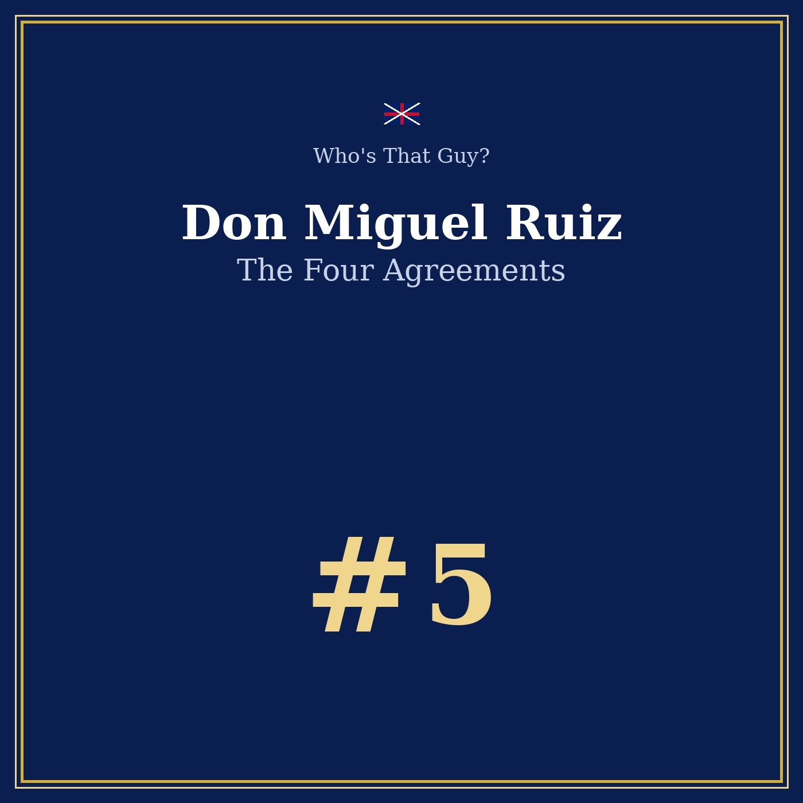

Episode 5 — a surgeon, a car crash, and four sentences that changed millions of lives
This program is a documentary portrait for educational and cultural purposes. Our analysis reformulates the four agreements and does not reproduce Don Miguel Ruiz's text, whose rights remain with the author.

🎧 Listen to the portrait: Don Miguel Ruiz — The Four Agreements, 13 min 18 — Listen on Spotify →
Miguel Ángel Ruiz was born in 1952 in Guadalajara, Mexico, the youngest of thirteen children. His mother was a curandera (healer), his grandfather a Toltec nagual (shaman). But young Miguel wanted none of it — he became a surgeon, the rational counterpoint to his family's spiritual world. For years, he practiced medicine by day and taught his Toltec tradition by night, until a near-fatal car crash in the early 1970s changed everything.
"I fell asleep at the wheel. When I woke up, I was not the same person."
Before we talk about the agreements, a word on the Toltecs. The historical Toltecs were a pre-Columbian civilization centered at Tula (in present-day Hidalgo, Mexico), flourishing between roughly 900 and 1150 CE. They built pyramids, traded obsidian, and left behind warrior statues — the atlantes. The Aztecs later mythologized them as master craftsmen and artists: in Nahuatl, Toltecayotl means "the Toltec way," the art of living in balance. Ruiz belongs to a modern Toltec revival that draws on this heritage while blending it with twentieth-century self-help — a distinction he himself acknowledges.
Published in 1997, The Four Agreements spent over a decade on the New York Times bestseller list. Here they are, with a look at what they really mean — and what psychology has to say:
1. Be impeccable with your word. Speak with integrity. Say only what you mean. Avoid using the word against yourself or to gossip about others. Cognitive behavioral therapists call this the link between inner speech and self-esteem — the words you use shape the world you inhabit.
2. Don't take anything personally. What others say and do is a projection of their own reality. When you are immune to the opinions and actions of others, you won't be the victim of needless suffering. Psychologists recognize this as externalization — separating your self-worth from others' behavior, a cornerstone of resilience training.
3. Don't make assumptions. Find the courage to ask questions and express what you really want. Communicate clearly to avoid misunderstandings. This maps directly onto cognitive reframing: the habit of checking your interpretations against reality rather than building stories in your head.
4. Always do your best. Your best changes from moment to moment — when you're healthy versus sick, rested versus tired. Under any circumstance, simply do your best, and you will avoid self-judgment, self-abuse, and regret. This is the self-compassion that researchers like Kristin Neff have documented as protective against depression and anxiety.
Ruiz's work has been criticized for its loose handling of Toltec history and its debt to earlier self-help traditions — echoes of Carlos Castaneda, of New Thought, of cognitive therapy rebranded in spiritual language. None of this diminishes the book's impact: with over 10 million copies sold in 46 languages, The Four Agreements has helped millions reframe their inner dialogue. The question is not whether Ruiz invented these ideas — he didn't — but whether his synthesis has made them accessible to people who would never pick up a psychology textbook. On that count, the answer is plainly yes.
Sources: Wikipedia (Don Miguel Ruiz, The Four Agreements, Toltec), BNF. Fact-checked October 2026.